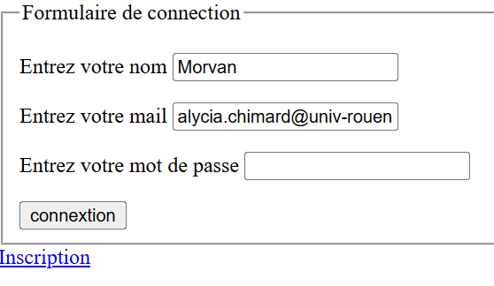

Mars 2025
 Lien vers le site de BilletterieConception d’un site de billetterie en une page PHP, permettant une gestion dynamique des contenus selon le type d’utilisateur, avec réservation pour les clients et administration complète des événements pour les administrateurs, le tout sécurisé via une base de données SQL.
PHP, SQL, HTML
J’ai développé un site de billetterie dynamique en une seule page PHP, conçu pour adapter l’affichage et les fonctionnalités en fonction du profil utilisateur. Les clients peuvent facilement réserver ou annuler leurs événements, tandis que les administrateurs disposent d’un accès complet pour ajouter, modifier ou supprimer les événements.
L’ensemble du site repose sur une base de données SQL sécurisée, garantissant la protection des informations échangées. Lors de l’inscription, une vérification systématique de l’adresse e-mail permet de valider l’identité des utilisateurs et d’attribuer automatiquement les droits d’accès appropriés, assurant ainsi un contrôle précis et fiable des fonctionnalités disponibles pour chaque type d’utilisateur.